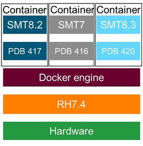

Running SmarTest in a container
Advantest provides container images for a wide range of SmarTest applications from the Advantest Software Center. Containers can be used in offline mode to enable the running of multiple SmarTest versions and sessions on the same workstation in parallel. A SmarTest workstation can be shared by multiple test engineers without interfering with each other. Currently Docker is used to provide the operating system-level isolation to run software in packages or containers.
A container image is a lightweight, standalone, executable package of software that includes everything needed to run an application: code, runtime, system tools, system libraries and settings. For more information, see https://www.docker.com/resources/what-container.

There are many benefits of running applications in container images over conventional virtualization:
- Low performance impact as the container has access to the bare metal resources. There is only the one operating system kernel of the host is running. No CPU emulation required and no memory mapping involved.
- namespaces are used for process isolation (https://man7.org/linux/man-pages/man7/namespaces.7.html)
- cgroups can be used for setting limits (https://man7.org/linux/man-pages/man7/cgroups.7.html)
- Docker host (the bare metal machine) can run any operating system supporting Docker, for example, Linux distributions such as Debian, Ubuntu, Suse, and Centos.
File system
Containers always start in a clean state. Any changes that you make to the container during run-time are lost when you stop the container. The container image is invariant. This is achieved by using an overlay file system, where all overlay write transactions are discarded when the container is stopped.
It is important to recognize that the write performance of the overlay file system is slower than the native host file system.
To maintain persistent data, which survives multiple starts of a SmarTest container, Docker uses the concept of volume mounts. These are similar in concept to a Linux mount operation. A part of the file system of the host workstation is mounted to a specified file or path inside the container. As this data resides on the host workstation's file system, it is not removed when the container is stopped. Access to data on volume mounts is faster as the higher performance bare metal hardware is being used.
- Tester model file
- License pointer file
- Directory where the test program and project resides
- Log output directories of SmarTest (if you want to maximize performance or want to keep the log files)
- Custom scripts
Volume mounts use the command line option -v and the parameter host path/filename:container path/filename. For example, to use a model file located on the file system of the Docker host system,
-v /container_model_file_folder/tester.model:/etc/opt/hp93000/soc_common/tester.model
For details of usage, see Using SmarTest Docker containers.
Network
Containers can communicate with the network but by default they do not expose any network ports to the outside. If you run a SmarTest container in headless mode, it starts an internal VNC server. Without additional configuration, this VNC server is not accessible as the container blocks all incoming traffic.
To allow incoming network traffic, containers use the concept of port mapping. You can assign any listening port on the outside (towards the host workstation) to any port inside the container where your daemon is listening.
In the case of the container's VNC server, the port inside the container is fixed to port 5901. On the outside you can pick any port number that is not used by the host workstation. Good choices for VNC are ports in the range 5900 to 5999. However, port 5900 is usually blocked by the host X Server. Port 5901 is often blocked by an additional VNC server. Ports in the range 5902 to 5999 are usually available. If you have more VNC servers running, select a port one one higher than your highest host VNC server.
The command line option for port mapping is -p. For details of usage, see Using SmarTest Docker containers.
Memory and CPU
Containers by default have access to all system memory and the full CPU power of the host workstation. However, by default, shared memory availability is limited to 64MB. Most programs do not require a large amount of shared memory.
In contrast, SmarTest makes intensive use of shared memory. Large test programs usually require more than 64MB of shared memory. For SmarTest, it is recommended to declare all the memory of the host workstation as shared memory.
The option used to specify the amount of shared memory is: --shm-size For example, if your workstation has 64 GB of RAM, you add the command line option --shm-size="64g" to the docker run command:
docker run -it --shm-size="64g" ...
For details of usage, see Using SmarTest Docker containers.
Limitations
There are some limitations to be aware of when running SmarTest in a Docker container:
- SmarTest offline use only
- License file must be added before use (typically mapped using the –v
option) Note Dedicated docker images are configured for FNE or FNP licensing. Select the appropriate version for your licensing infrastructure.
- V93000 model file must be added before use (typically mapped using the –v option)
- Test program or device is typically mapped from the host file system to the container
- Memory options must be set according to the test program or device needs (adapt shared memory size to match test program requirement with physical RAM)
Functional changes
- Introduced in SmarTest 8.4.3